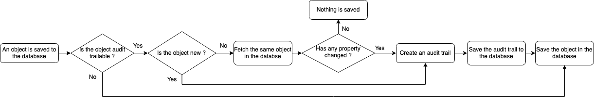
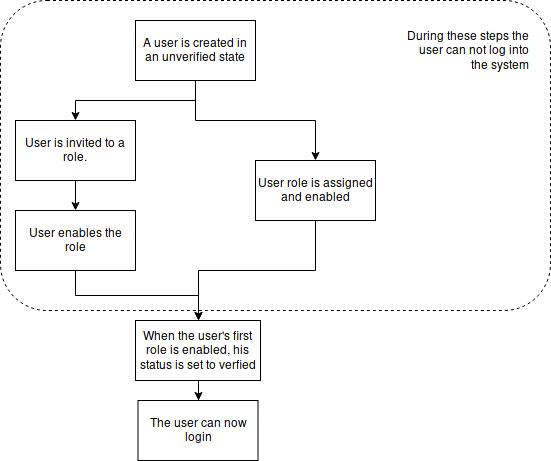
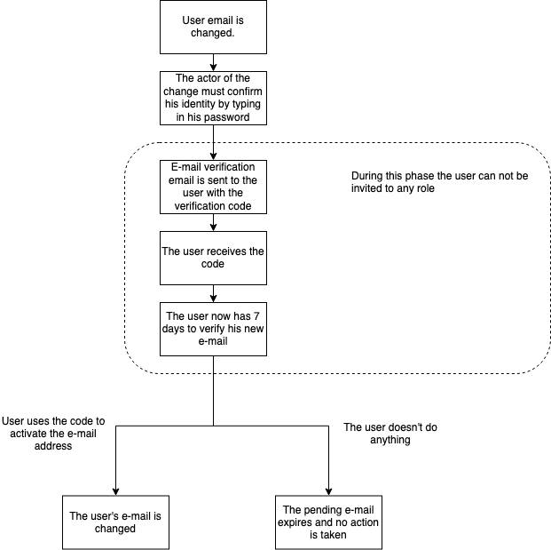
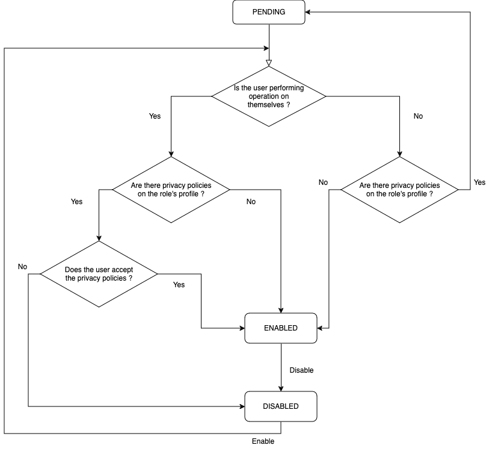
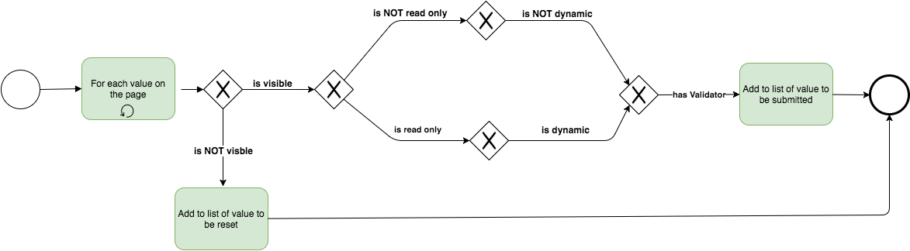
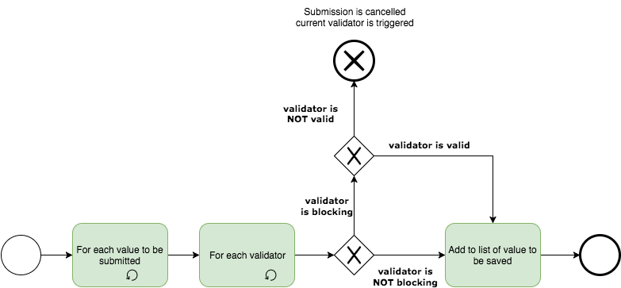
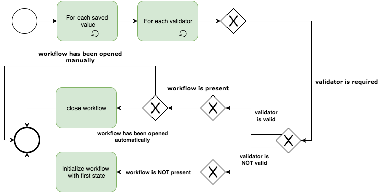
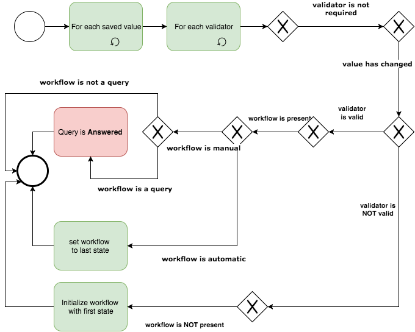
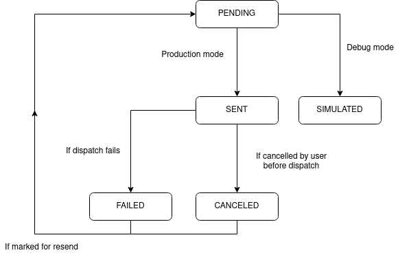

This document describes the general architecture of the Rodano system.
Good coding practices
The design conventions and general guidelines are the following:
Always use the style guide provided by your IDE of choice. Keeps the code style consistent.
Try to keep the code simple. Comment and document the complicated parts.
Code should be as readable as possible: try to stay concise, limit the line character length, always think of the most readable and consistent naming for variables and functions.
Think about the separation of concerns. If a function or a class does too many things, break them up.
Dependencies
The application requires the following dependencies/environment to work:
A relational database used to store the study data (MariaDB)
A configuration file to specify the study configuration (in JSON format)
A directory on a persistent drive to store the files uploaded by the users
An SMTP server to send emails
Technologies
Several technologies are used in the Rodano system, the most prominent ones are:
Spring boot: used for general application framework
MariaDB: acts as the database for all the persistent data
jOOQ: used to write SQL queries in a type-safe way
OpenCSV: used to generate CSV files
JUnit: used for tests
Technical configuration
Some technical aspects of Rodano can be configured using parameters that can be set in a dedicated file or added directly to the command line. These parameters are documented in the README file.
Business configuration
Rodano is a highly configurable product and Rodano configurator can be used to configure it with ease. Rodano configurator generates a JSON configuration file for Rodano.
Each entity found in Rodano has an equivalent entity in the configuration. Here is the matching table between configuration entities and their associated Rodano entities:
Configuration entity
Database entity
Study
Study
Scope model
Scope
Event model
Event
Dataset model
Dataset
Field model
Field
Workflow
Workflow status
Usage
When Rodano is started it deserializes the JSON configuration file into a graph of objects. The configuration object graph is static and global.
Configuration entities
Study
Study is the root element of the configuration. It contains global settings like information about the protocol, study email settings or available languages.
Languages
Rodano is a multilingual product. Every element of the configuration can be translated. Connected users can choose their language among activated languages on the product.
Menu
Menus are used to navigate through the Rodano application. Configured menus will appear in the menu bar, on top of every page. There are two levels of menus. A top level menu can contain one or several sub-menus.
Feature
A feature defines a right to access an information or to perform an action. There is a list of pre-configured features in the product. It is possible to define new features dynamically and to use these new features in other parts of the configuration.
Here is the list of pre-configured features:
Name
Description
ADMIN
Gives global administration rights
LOGIN
Allows to connect on the web interface
MANAGE_CONFIGURATION
Allows to edit the configuration
MANAGE_DELETED_DATA
Allows to view and manage deleted data
MANAGE_MAILS
Allows to manage emails sent by system
MANAGE_RESOURCE
Allows to manage resources
LOCK
Allows locking of scopes and events
DOCUMENTATION
Allows to export documentation files
EXPORT
Allows to export data
NOTIFY_RESOURCE_PUBLISHED
Get notified when a resource is published
VIEW_AUDIT_TRAIL
View audit trails
Profile
A profile is a set of features that can be assigned to a user.
Scope model
A scope model describes the behavior of a scope. Scopes are main elements of a study. A scope can be a
patient, a center or a country and will be used as a data container. A scope can be it-self contained in
one or more other scopes following the scheme described by scope models. For example, the scope model
PATIENT can be configured as a child of scope models CENTER and SUBSTUDY. In
this case, all “patients” (scopes having PATIENT as scope model) of a study would be able to be
stored in “centers” or “substudies”. The leaf scope model does not have any children.
Here are notable settings of a scope model:
"maxNumber" is the maximum number of scopes that can be created with this scope model.
"virtual" means that the scope model is a logical group than a physical one.
"format" is the pattern that be used to generate the id/code of a scope created from this scope model.
A profile can have the following rights on a scope model: READ and WRITE.
Event model
An event model is a generic configuration for an event in time.
Dataset model
A dataset model is a group of field models. A dataset model can be associated to a minimum of 2 other dataset models to create a family. Every family of models must contain one and only one master model. Other models are called slaves. When a value of a slave model is updated, it is compared to the same value on the other slave models. If all values are equals, the value is saved in the master model. If it is not the case, a “disparity” is created and a manual action is required to choose the correct value.
Here are notable settings of a dataset model:
"exportable" means that the model will be available on the export page of Rodano.
A profile can have the following rights on a dataset model: READ and WRITE.
Field model
A field model is a configuration entity of a field in the eCRF. There are different types of field
models:
Name
Description
STRING
Alphanumeric value with a maximum of 200 characters.
NUMBER
Number with specified format.
TEXTAREA
Alphanumeric value displayed as a text.
SELECT
Value among a list of options, only one value possible.
RADIO
Value among a list of options, only one value possible.
CHECKBOX
Value empty, true or false. Displayed as a checkbox.
CHECKBOX_GROUP
Values among a list of options, more the one value possible.
Option "other" allows to have the user fill his own value.
DATE
Date, time or both, following a specified format. Displayed as
simple input.
DATE_SELECT
Date using 3 dropdowns. Allows choosing "Unknown" for some fields
(e.g. "Unknown.05.1974").
AUTO_COMPLETION
Alphanumeric value with suggestions.
Here are notable settings of a field model:
"exportable" means that the field model will be available on the export page of Rodano.
Validator
A validator is used to validate a value of a field. It relies on rules written by the eCRF designer which
are used to decide if a value is valid or not. If value is not valid, a workflow can be triggered.
Workflow
A workflow is the description of a process that can be attached to scope, event, form or a field. A
workflow contains one or more states which have one or more actions.
Privacy policy
A privacy policy is a text that will be displayed to the user when he activates every new role. It is
linked to a profile. The user must accept the policy to activate his role.
Scope
Description
Scope is the main data container object of the application. A scope’s configuration is defined by its scope model. Through the use of a scope model, a scope can represent any study entity: patient, centre, country, study, sub-study, etc. Data that is directly related to the scope entity can be represented using the one or more datasets attached directly to the scope (e.g. patient record, medical history, family history, etc.). Events can also be attached to scope to represent specific events through time (e.g.medical visit, termination event, etc.).
Scopes are arranged in a tree-like hierarchy with the scope representing the study usually acting as the root node of the tree, this scope is referred to as the root scope. All the scopes must have at least one parent relation except for the root scope.
Root scope
Root scope serves as the root node of the scope tree hierarchy. Thus one and only one root scope can be present in the system at any given moment. The root scope can not be created by a user and is usually created at the database initialization of a new deployment.
Scope code
When a scope is created, a unique and non-modifiable scope code is created for it. The format of the scope code is based on the code format specified in the relevant scope model.
Virtual scope
A virtual scope is used to represent non-physical assembly of other scopes. For example, it can be used to
assemble a group of scopes that adhere to certain criteria. Note that virtual scopes can only be created by
providing a scope model that is marked as virtual.
Enrollment model
It is possible to define an enrollment model for a virtual scope. An enrollment model describes characteristics required for other scopes to be associated with the virtual scope. Here are the available options when creating an enrollment model:
Scope model ID: scope model to match
Scope container IDs: candidates must be contained in one of the specified scope container. This is used to build a white list of ancestors to which candidates must be related
Field model criterion: candidate’s data must match specified criterion. A criterion is a combination of a reference to particular models (i.e. dataset and field models), an operator (equals, greater, lower or equals, etc.) and a value
An enrollment model can be automatic or manual. In automatic mode, if a scope matches enrollment model
constraints, it is automatically added as a child of the virtual scope. In manual mode, a user must
validate each candidate manually. An enrolled scope will never be removed automatically from a virtual
scope even if, after being updated, it no longer matches required constraints.
Scope relations
Scope relations are the entities that define the edges between the scopes in the scope hierarchy tree. They define the relations between individual scopes. All scope relations are created with a start date and can feature an optional end date. The relation end date thus defines the end of the relation between the two referenced scopes. A scope’s model can define the maximum number of allowed child scopes.
Default relation
A scope relation can be defined as the default relation between two scopes. Every scope must have exactly one parent relation marked as default at any time. Note that virtual and non-active relations (past or future relations) can not be defined as default.
Virtual relation
A relation is defined as virtual if the parent scope of the relation is a virtual scope.
Creation
A scope relation needs the following parameters upon creation:
Reference to the parent scope.
Reference to the child scope.
The start date of the relation.
An optional end date of the relation.
A relation can not be created if at least one of the following statements is true:
At least one of the scopes is either deleted or locked
The two scopes already have an active relation at the time of creation
There is no date overlap in the relations between the parent and child scopes
The total number of children scopes does not exceed the maximum allowed in the parent’s scope model, if such a maximum is defined
The relation must respect the scope’s model constraints. i.e. The scope model of the child scope must be a child scope model of the scope model of the parent scope
End of relation
A scope relation can be ended at the provided end date under the following conditions:
Neither of the scopes is locked or deleted
The relation is not the default relation
The provided relation end date is after the relation start date
Important to note that the virtual relations will be immediately and permanently removed from the database, while the non-virtual relations will just have an end date set to them.
User rights on scopes
When a user is granted the rights to manage a scope, he can see all current descendant scopes of this scope.
This means that he has rights to see descendant scopes that have been added in the scope before he has been
given the right on the scope. The user will also have right to see any future descendant scopes that could
be added afterwards.
However, if a descendant scope is transferred to another scope, the user will be able to see only data of
events that happened before the transfer. All future collected data will be hidden from the user. This means
that they won’t be able to view next events nor the eventual data modifications. Analogously, if a
descendant scope is transferred to his scope he will see all pre-existing data in read only mode and won’t
be able to add events before the transfer date.
Note that in the case of a virtual scope, the user that has rights on the virtual scope can see all the past
data of the descendant scopes. To illustrate this concept, suppose that a user has rights on centre
x which has a patient that just got transferred from centre y to centre x. At
this point the user can only see the data that happened after the transfer. But if the user is also granted
rights on a virtual scope of which the patient scope is a descendant of, then the user will be able to see
all the patient’s data before the transfer. In this way the virtual scope "overrides" the usual rights on
scopes.
Creation
A scope can be created at any time providing the following parameters:
Scope model.
Parent scope.
Deletion
When a scope is deleted by a user, its deleted flag is set to true and all the scope
deletion rules are executed on the scope. The deleted scope can be restored by a
user with the appropriate rights. Note that if a parent scope is deleted, it and its descendants will only
be visible to authorized users, even though the descendant scopes are not deleted.
Restoration
Any deleted scope can be restored by an authorized user. When a scope is restored by a user:
The scope’s deleted flag is set to false.
All the fields found in the scope’s datasets, the datasets of its events and recursively in all its
descendant scopes are validated.
An event is a representation of something (i.e. a patient visit, an intervention, a sample collection, etc.) that has already happened or will happen in the future. An event is always attached to a scope and can contain one or more datasets. Event’s model is defined by an event model in the configuration. An event has an expected date, a start date and an optional end date.
Expected event
An event is considered expected when it has an expected date set, but not the start date. When an event has both an expected date and a start date set, it is no longer considered expected.
Planned event
An event is considered planned if its event model is planned.
Creation
If the event’s event model is mandatory, it is created automatically when it’s
associated scope is created. Otherwise, the event can be created manually by a user, if the configuration
allows it. An event can be created if all the following statements are true:
The associated scope is not locked.
The event’s model is linked to the scope’s model in the configuration.
No blocking event is present on the scope.
The maximum number of allowed events has not been reached, if a maximum is defined in the configuration.
There is no rule that forbids the addition of the event.
Deletion
A mandatory or locked event can not be deleted or reset. A non-mandatory event can be deleted manually by
an authorized user. When an event is deleted, the following sequence occurs:
The event’s deleted flag is set to true.
The dates of all the planned events’ expected dates are
recalculated.
Dataset is a container for one or more fields. A dataset represents a collection of
one or more fields and can thus serve to regroup fields with the same theme (e.g. all the fields relating to
the patient information could be regrouped in a single "patient information" dataset). A dataset can be
attached directly to a scope or to a event. A dataset can
be either of single or multiple type. Dataset’s model is defined by a dataset model in the configuration.
Single and multiple datasets
Single datasets are datasets that can be instanced only once on a single object.
Multiple datasets are datasets that can be instanced more than once on the same object. This
type of dataset is useful for multiple entries of generic information (i.e. drug treatments for a single
patient) or for tracking history in a single scope/event (i.e. single patient’s medical history).
Creation
Datasets of type single are created whenever a scope or an event is created and has dataset models attached to it in the configuration. Dataset of type multiple can be created manually by an authorized user. In order to create a dataset, its dataset model has to be present in the scope’s or event’s model. When a dataset is created, all the fields associated with it are created.
Deletion
Only a dataset of type multiple can be manually deleted by an authorized user. When a dataset is deleted, all the dataset removal rules are executed.
Restoration
A deleted dataset can be restored by an authorized user. When a dataset is restored, all the dataset’s fields are validated and the dataset restoration rules are executed.
Form
Description
A form object serves as a metaphor for a paper medical form in a clinical study. A form can contain zero or
more fields from one or more datasets. Note that a form
does not need to contain all the fields of a particular dataset, it is a visual grouping of fields. For
example, we can have a form that contains the address of the patient and a form that regroups fields that
define other information pertinent to the patient while all these fields belong to one single dataset that
regroups patient information. The form’s model, including its visual layout, is defined by the form model in the configuration. A form can have zero or more workflow statuses attached to it. A form can be attached to an event or
directly to a scope.
Creation
All forms associated with a scope or an event in the configuration are automatically created upon their
creation. All the workflows attached to the form in the configuration are initialized upon form creation.
Deletion
A form can be deleted through a form removal action. Upon deletion:
The form’s deleted value is set to true.
The mandatory workflows of the form and its fields are reset.
The non-mandatory workflows of the form and its fields are deleted.
Datasets of type multiple that are not directly attached to a scope or an event are deleted.
Fields that are not on scope are reset.
Restoration
A form can be restored through a form restore action. Note that this action only
restores the form itself and it does not affect any fields or datasets associated with the form.
Field
Description
A field represents a singular value in a dataset. They are used for value transmission (for example, when a user sends new data to the system), field validation and value storage. A field contains a unique identifier, a reference to its dataset, the ID of the field model and a value. A field can not be deleted nor restored. Field’s model is defined by a field model in the configuration.
Field value
A field’s value represents the value that is actually stored in the database for a given field. A field can
have three possible values associated with it:
A null value.
A blank value, which is either an empty string or whitespace.
A string value, which is stored as a string of characters in the database.
Interpreted value
The value that is actually returned to the user through the API is the interpreted value of the
field. The interpreted value calculation abides by the following pattern:
If the user that requests the field’s value no longer has rights to the scope to which the field belongs, the value returned is the last value to which the user had rights before rights removal.
If the field value is null, the field model is not a plugin and the model has a formula defined on it, then the value is calculated using the provided formula.
Otherwise, the actual field value is returned.
It should be noted that the interpreted value is calculated on the fly and does not necessarily reflect the field value actually stored in the database.
File field
Fields with the model of type FILE are a special case among the fields. In order to identify
possible file changes and to integrate it with the string only value of the field, the field value
in this case consists of the file name concatenated with the checksum of the actual file that has been
uploaded. More information on the file field processing can be found in section 16.3.1.
Creation
Whenever a new dataset is created, a field is automatically created for every field model that is associated with the dataset’s model in the configuration.
Reset
A field can be reset. This means that its value is set to null and the value update rules are executed. When a field is reset, all the mandatory workflow statuses associated with it are reset to their initial state and all the non-mandatory workflow statuses are deleted.
Workflow status
Description
A workflow status defines the status of a workflow on an object. The model of the workflow status is defined by the workflow in the configuration. A workflow status can be attached to any workflowable object:
When a workflow status is created, it is initialized with a reference to an object, an ID of a workflow in the configuration and an initial status as defined in the workflow configuration. Workflow status can be created in several ways:
When a workflowable object is created, and it has workflows associated with its creation in the configuration.
Whenever a workflow status is initialized, the workflow creation rules are executed.
Status modification
Whenever the status of an existing workflow status is modified, the status ID is changed and the change is audit trailed. Whenever a status is modified, the status modification rules are executed. Workflow status can be modified through:
Note that the status can not be modified if the associated workflowable object is locked.
Deletion
A workflow status is deleted whenever an object to which it is attached to is reset or deleted.
Audit trails
All the modifications performed on the objects in the system are audit trailed. Audit trails are used to track all object modifications and can be used to reconstruct the object history.
The principle behind audit trailing in Rodano is similar to a version control system. Every time an object is saved the system fetches the same object already present in the database and checks if any of the properties of the object have been changed. If that is the case, the new version of the object is timestamped and saved in the audit trail table. If the object has not been modified, nothing is saved. The whole process is described in the diagram below.

Audit trail flow
Note that if two users perform the same modification to one object at the same time, two identical audit trail
rows may be added to the database (reflecting the same last state of the entity). That is because the
modifications will be made in different SQL transactions.
Audit action
An audit action is a construct that allows grouping of multiple audit trails under a single action triggered by a user or a robot. For example, suppose some user updates a field in a dataset which in turn triggers a rule that updates the value of another field. All the audit trails resulting from the user action (even changes that are executed by the system) will be associated with a single audit action. We can thus see which user interaction triggered specific changes in the database.
Note that the audit actions are created and recorded in the database even when no modification is made by the user on the database entities. This is a current limitation that will be addressed in a future version.
Content and creation
An audit action is created whenever a data-modifying API action (identified by HTTP methods PUT, POST and DELETE) is performed by a user or whenever the system starts a pre-programmed action (i.e. a CRON task). An audit action contains the following properties:
Date of the action.
PK of the user or the robot performing the action. Empty if it is the system that starts the action.
Context for the action, which is the endpoint of the API method activated by the user.
Users
A user is identified by a unique email and a password. A single user can have multiple roles. A user can only read and write data in the system in accordance to the rights given to their roles. A single role can also have multiple features that enables them to perform certain specific actions as defined in the study configuration (i.e. see deleted resources, etc.).
Creation
A user can be created by other users who have the rights to do so. To create a user the following is necessary:
When a user is created, an email with a unique link is sent to the user’s email inviting them to enable the
role to which they were invited. When the user lands on the activation page, they need to accept the
displayed privacy policies, if any are attached to the role, and select a password for their account. As
soon as a valid password is chosen, the user’s account is activated and the user’s roles status change from PENDING to ENABLED. And thus the user
account creation is finalized.
Identification
A user is identified by a unique email which serves as the user’s ID and a secret password (as described in 11.10 (d) of 21 CFR Part 11 and tested in USER_ID).
Authentication
A user can log into the system by using their verified email and their secret password. All successful and
unsuccessful login attempts are audit trailed (as described in 11.10 (d) of
21 CFR Part 11 and tested in USER_LOGIN_TRAIL).
Email verification
Anytime a user changes their email it needs to be verified in order for the user to be able to access the system with the new email. Whenever a user changes his email, the following happens:
An email with a verification link is sent to the newly entered email address.
The user has 7 days to activate his new email by using the verification link.
If the user uses the link, the new email becomes the user’s current email.
If the user does not use the link in the allotted time, the link expires and the user’s email does not change.
When a user is created, the email is implicitly verified upon the first role activation. The following diagrams describes all the flows of the email verification.

When a user is created

When a user e-mail is changed
Password management
Modification
Any logged-in user can modify their password anytime (as described in 11.10 (d) of 21 CFR Part 11 and
tested in USER_CAN_CHANGE_PASSWORD). A user’s password can be modified in several ways:
When a user activates his first role, the user needs to choose his password.
A logged-in user can modify his password anytime using his current password as confirmation.
Length and required characters
Any user password is subject to password requirements (as described in 11.10 (d) of 21 CFR Part 11 and
tested in CHECK_PASSWORD_LENGTH). A user’s password must have a length of at least six
characters and must contain at least:
One uppercase character.
One number.
One of the following special characters: ! \" # $ % & ’ ( ) * + , - . /: ; < = > ? @ [ ] ^_ ‘
Limited duration
If a password time limit is defined in the study configuration, a user’s password can have a limited
duration. If a user’s password is expired, they will be asked to enter a new password on their next
login attempt (as described in 11.300 (b) of 21 CFR Part 11 and tested in PASSWORD_DURATION and
MUST_CHANGE_PASSWORD).
Limited attempts
If a limit for consecutive unsuccessful login attempts is defined in the study configuration, user will
be locked out of the system upon reaching that limit. The user will then be forced to contact a system
administrator in order to get a new password (as described in 11.10 (d) of 21 CFR Part 11 and tested in
LIMITED_PASSWORD_ATTEMPTS).
Previous passwords
Every time a user’s password is changed, the hash of the new password is checked against all the hashes
of the user’s previous passwords in order to verify if the new password has already been used. If a
positive match is found, the new password is rejected. If the password has never been used, the new
password becomes current and the hash of the previous password is added to the array of used passwords
(as described in 11.300 (b) of 21 CFR Part 11 and tested in COMPARE_TO_PREVIOUS_PASSWORDS).
Storage
All passwords are stored in the database in the form of a bcrypt hash (as described in 11.10 (d) of 21
CFR Part 11 and tested in PASSWORD_HASHING). When a user tries to log in, the password is
hashed using the bcrypt algorithm and compared to the hash stored in the database. The plaintext
password is then discarded. Only the hashes of the passwords are stored in the database to protect all
the user passwords in an unfortunate event of a database leak and to keep the users’ passwords protected
from the system administrators.
Roles
All users must have at least one active role. A role is necessarily associated with a scope. A role grants the user all rights defined by the role’s profile and its scope. The following diagram shows the lifecycle of a role.

Role lifecycle
Possible states
These are the possible states for any role:
PENDING: the role has been created, but has not yet been accepted by the user.
ENABLED: the role is enabled after the user has accepted the role and its privacy policies.
DISABLED: the role has been disabled by an authorized user.
Creating a role
A role can be created on any existing user. When a role is created, the role creation rules are triggered and
the role’s status is set to PENDING. Only two things are needed for role creation:
A scope reference, to which the role will be attached.
If a user has pending roles associated with them, they can enable the role themselves directly, if no privacy
policies are attached to the role’s profile. If privacy policies are present, the
user first needs to accept them in order to enabled the role. If the user rejects the privacy policies, the
role will become DISABLED. Furthermore any authorized user can enbale a pending role on another
user, as long as no privacy policies are attached to the role’s profile.
Disabling a role
Any enabled role can be disabled by a user with sufficient rights. Note that if a user has only one role
enabled, it can not be disabled. If a user possessing a single enabled role must be removed from the system,
it is preferable to delete the user.
Re-enabling a role
Note that any disabled role can be re-enabled by an authorized user.
Field processing and validation
After the user submits new data to eCRF in form of datasets that contain newly modified fields, those fields are
filtered, validated and updated in the database.
Field processing
When the system receives the newly submitted fields, it needs to identify which fields need to be processed
and which can be reset or discarded. To do this, the following criteria are used:
Is the field visible on the page? Some fields are displayed only if some other field holds a particular value or certain conditions are met. If the field is not visible, it is reset.
Is the field is dynamic? If the field is dynamic then its value will be set by the system and not by the user, however, its value might need to be processed for validation, or to trigger a rule.
Is the field read-only? Some fields are not editable by users and might be computed by other fields. However, such fields need to be processed, so the validation can occur and rules can be triggered.
Does the field have an edit check? If an edit check is attached to a field, the system must validate the field if some conditions are met.
The field filtering flow is described in the following diagram.

Field filtering flowchart
Validation
After the fields are submitted and filtered, the field validation phase starts. The field validation applies
to all fields whose models have validators attached to them. The field validation can be broken down into
three phases:
Phase I: Blocking validators are applied.
Phase II: Required field validators are applied.
Phase III: All other validators are applied.
The whole field validation procedure is described in detail in the following diagram.
Field validation flowchart
Blocking validators
Some fields have blocking validators attached to them. If at least one the blocking validator’s criteria are not met, the system aborts the whole field update process and sends the failed blocking validators’ descriptions to the user. The following diagram describes the process.

Blocking validator flow
Required field validation
Some field models can be marked as “required“ in the study configuration. The fields that are associated with those models are validated in the required field phase of the field validation. For each field that has a required validator, the following occurs:
If the field is valid (i.e. not empty), the validation proceeds on to the next
field and:
If the field has workflow attached to it, then the workflow is set to an invalid state.
If the is not valid (i.e. empty), the validation proceeds on to the next field and:
If the field has no workflow attached to it, then initialize the workflow specified in the configuration and set it to the invalid state.
If the field already has a workflow attached to it, then leave the workflow as-is.
This validation phase is described in the following diagram.

Required validator flow
Field validation
Any field model can have one or more validators attached to it in the study configuration. The fields associated with those models are validated in this phase of the field validation.
For each validator attached to the field:
If the value of the field is valid:
If it is in a valid state, then leave the workflow as-is.
If it is in an invalid state, then set the workflow to the valid state.
If the value of the field is not valid:
If the field value or its dependencies have changed, set the workflow to valid state and initialize a new required workflow in an invalid state.
Otherwise, if the required workflow that is already present should be set to an invalid state.
The whole process is described in the following diagram.

Field model validator flow
Updating values
The value update process works as follows:
The submitted field value is compared to the same field value present in the database
If the value is the same, the field value is not updated.
If the value is different, then the field value is updated to the newly submitted value.
All updated fields are saved and audit trailed in a single transaction in the database.
Updating file fields
Fields of type FILE are a special case during the value update process. The actual file content is uploaded in a separate transaction before the field is uploaded. When the field is uploaded and after it is processed and linked with the file, the resulting value of the field is a concatenation of the file name and the checksum of the file content. The whole procedure is:
The file is uploaded by a user. A SHA-1 checksum is generated from its contents and a new field name is generated by concatenating the file name and the checksum.
The new field name is sent to the user.
The file field is uploaded with the newly updated value of the field.
The uploaded field value is compared to the field value present in the database. If the value is the same, the field value is not updated and the uploaded file is discarded. If the value is different, proceed.
The value of the field is updated, the new file is saved and the old file associated with field is audit trailed.
Because the field value contains both file name and file checksum, the system can detect the file name
change and file content change in the field value comparison. This way if a user uploads a different
file with the same name several times, the system will detect this fact.
Note that if the field value has been updated, but no file has been uploaded, the field update operation
will throw an error. Also, the files that have been uploaded, but never associated with a field will be
deleted from the database after a certain time.
Lock
A lock placed on an object prevents all further modifications to that object. All attempt at modification of a
locked object results in error. Lock is employed on two levels: event and scope. Lock on an event prevents all
modifications to the event itself, to its datasets and fields. Locking a scope locks the scope itself, its
events and all its descendant scopes and their events. A locked scope or event can be unlocked at any time by an
authorized user. When a scope is unlocked, all of its events and descendant scopes are unlocked.
Note that when a scope is locked, all its descendant scopes are locked, but this doesn’t prevent the descendant
scopes from being unlocked individually at any time.
Emails
The system can send notifications in form of emails. Notifications can be sent automatically by the system to
notify users of important events (such as a new role invitation) or through the rules defined in the study
configuration.
Dispatch queue
The system implements a dispatch queue for emails. When an email is created, it is added to the dispatch
queue. The dispatch queue sends batches of emails periodically (batch size and the dispatch period is
adjustable in the configuration) and sends the emails in FIFO order. If an email is cancelled before it
could be sent, it is removed from the dispatch queue.
Lifecycle
These are the possible states of an email:
Pending: The email has been created and added to the email queue.
Sent: The email has been sent.
Simulated: This status is used for email testing and does not actually send out the email.
Cancelled: email dispatch has been manually cancelled.
Failed: email dispatch has failed.
When an email is created, it is added to the email dispatch queue. The following diagram shows the lifecycle of an email.

Email lifecycle
Reports
Workflow summaries
A workflow summary is a tabular report that aggregates the data of one workflow by scope and state. It shows the number (absolute and percentage of the total) of workflows that are in each state of the workflow, for all scopes of the study.
Export
It is possible to export the workflows statuses that have been used to build the report. The export is a CSV file that lists all workflow statuses. It contains the following columns:
Name
Content
Description
Ancestor scope model ID
scope.pk
Scope unique identifier (repeatable for each ancestor)
Ancestor scope code
scope.code
Scope code (repeatable for each ancestor)
Event ID
event.pk
Event unique identifier (only if the workflow is linked to an event, or the workflow is linked to an entity linked to an event)
Event
eventModel.shortname
Event shortname (only if the workflow is linked to an event, or the workflow is linked to an entity linked to an event)
Event date
event.date
Event date (only if the workflow is linked to an event, or the workflow is linked to an entity linked to an event)
Form ID
form.pk
Field unique identifier (only if the workflow is linked to a field)
Form
formModel.shortname
Form shortname (only if the workflow is linked to a form)
Dataset ID
dataset.pk
Dataset unique identifier (only if the workflow is linked to a field)
Dataset
dataset.dataset_model_id
Dataset model ID in the configuration (only if the workflow is linked to a field)
Field ID
field.pk
Field unique identifier (only if the workflow is linked to a field)
Field
field.field_model_id
Field model ID in the configuration (only if the workflow is linked to a field)
Field value
field.value
Value of the field at the time the workflow status changed (only if the workflow is linked to a field)
Workflow ID
workflow.pk
Workflow unique identifier
Workflow
workflow.workflow_id
Workflow ID in the configuration
Workflow initialisation date
workflow.creation_time
Date and time when the workflow was created
Workflow initialisation message
workflow_status.trigger_message
Workflow status initial message
Workflow validator
workflow_status.validator_id
The validator that triggered the workflow (relevant only if the workflow has been triggered by a validator)
Current workflow status
workflow_status.state_id
Current status of the workflow
Current workflow status date
workflow_status.last_update_time
Date of the latest modification
Removed
workflow_status.deleted || entity.deleted
Specify if the workflow or the linked entity or one of the parent entity containing the workflow is deleted
The first 2 columns are repeated as many times as the depth of the scope tree. For example, in studies where
the scope model tree consists of Study, Country, Center and Patient, the columns will be: Study ID, Study,
Country ID, Country, Center ID, Center, Patient ID, Patient.
Deleted workflow statuses and workflow statuses attached to deleted entities are included only for users
having the feature MANAGE_DELETED_DATA.
Audit trail export
For workflow summaries that display non aggregating workflows, it is also possible to download the history of
the workflow statuses that have been used to build the report. The export is a CSV file that contains the
same workflow statuses as the regular export, and, for each of the workflow status, alls states it went
through. It contains the same columns as the regular export (except columns "Current workflow status" and
"Current workflow status date") and contain the following additional columns:
Name
Content
Description
Actor
workflow_status_audit.audit_actor
Actor who changed the workflow status
Workflow audit ID
workflow_status_audit.pk
Workflow audit unique identifier
Workflow audit date
workflow_status_audit.audit_datetime
Date and time when the workflow state changed
Workflow audit status
workflow_status_audit.state_id
State of the workflow on status change
Workflow audit message
workflow_status_audit.audit_context
Context of the status change
Resource
Description
A resource is an object containing information that can be displayed to the users. A resource can contain text (useful for spreading news to users) and it can contain attachments (useful for sharing documents to other users). A resource must be attached to a scope in order to define who can access it.
Resource scope
A resource must be attached to an existing scope. Only the users who have the right to read the resource’s scope can see the resource. The resource’s scope can be modified anytime.
Public resource
A resource that is marked as public can be accessed by anyone possessing the link to the resource, even by users who are not logged-in to the platform. The attachments of the public resources can also be downloaded by absolutely anyone possessing the link to the resource attachment. A resource can be marked as public during its creation or it can be made public during its lifetime. Note that the resource that is marked as public is automatically attached to the root scope of the study.
Resource category
A resource must be associated with a category. A category can be defined in the study configuration and is used to categorize resource into groups (e.g. news, study documents, etc.).
Creation
A resource can be created by an authorized user and requires the following parameters:
Title
Category ID
Scope ID
Is the resource public or not
Deletion
Any resource can be deleted anytime by an authorized user.
Restoration
Any deleted resource can be restored by an authorized user.
File attachment
Upload
When a file attachment is uploaded:
Uploaded file’s filename is stored in the database.
File itself is written to the filesystem with the resource’s UUID as its filename.
If the resource’s category is not news, a resource publication email notification is sent to subscribed users.
Since the resource’s UUID is used as the filename when it is stored in the filesystem, a resource can have only one attachment file.
Download
A file associated with a resource can be downloaded by any user who has the read right on the resource’s scope, unless the resource is public, in which case absolutely anyone can download the said file.
Widget
Description
A widget is a pre-configured component that displays information relevant to the study. They provide overviews of information relevant to the ongoing study. The available widgets are:
Welcome text - displays the welcome text defined in the configuration.
General information - displays general information relevant to the study. This widget uses custom study code in order to extract the relevant data.
Resources - displays the resources available to the user. Uses the configured resource category to filter the displayed resources.
Chart - displays the pre-configured chart based on the study data.
Workflow - displays the workflow-related information.